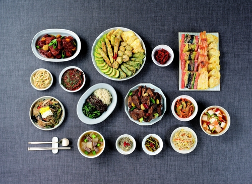

음식
목차
음식이란
요리의 종류
한식
양식
맛집
1. 음식이란
음식(FOOD)
1. 사람이 먹을 수 있도록 만든, 밥이나 국 따위의 물건.
2. 사람이 먹고 마시는 것을 통틀어 이르는 말.
2. 요리의 종류
한식
양식
2-1. 한식

한국식 요리의 총칭. 주로 한국의 전통식 요리를 뜻한다.
한식의 종류
밥류
비빔밥
죽
곤드레밥
김치류
겉절이
배추김치
동치미
고기류
불고기
너비아니
제육볶음
해물류
게장
과메기
아귀찜
국물류
사골
떡국
미역국
시래기국
떡
한과
고추장, 간장, 된장
젓갈
2-2. 양식
서양의 정통 요리. 줄여서 양식이라고도 한다.
양식의 종류
햄버거
치킨
도넛
피자
파스타
까르보나라
볼로네제
나폴리탄
알프레도
로제
봉골레
알리오 올리오
리조또
젤라토
스팸
3. 맛집
피자 :
도미노
치킨 :
푸라닭
파스타 :
요녀석파스타&필라프
햄버거 :
버거킹
비빔밥 :
씅's꼬기가득비빔밥
냉면 :
육쌈냉면
퓨전탕수육 :
대박탕수육
떡볶이 :
엽기떡볶이
하이퍼링크를 누르면 해당 맛집의 네이버 검색결과로 넘어갑니다.
위로가기
|
메인으로